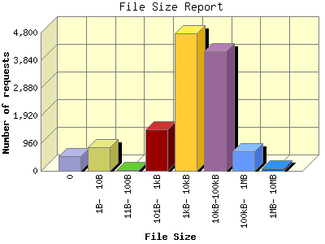

Report generated by Analog 6.0 and Report Magic 2.21
|
Web Server Statistics for "Harish Narayanan (hnarayan) - April 2006" Report generated by Analog 6.0 and Report Magic 2.21 |
The File Size Report categorizes the size of the file being requested. This can be useful in optimizing site performance. (Remember that on a 28.8Kps modem, it will take on average of 40 seconds to download 100Kb of data.)

| File Size | Number of requests | Number of bytes transferred | Percentage of the bytes | Percentage of the requests | |
|---|---|---|---|---|---|
| 1. | 0 | 503 | 0.000 B | 0.00% | 4.03% |
| 2. | 1B- 10B | 827 | 4.023 KB | 0.00% | 6.62% |
| 3. | 11B- 100B | 34 | 826.000 B | 0.00% | 0.27% |
| 4. | 101B- 1kB | 1,434 | 918.414 KB | 0.18% | 11.48% |
| 5. | 1kB- 10kB | 4,778 | 22.356 MB | 4.62% | 38.26% |
| 6. | 10kB-100kB | 4,160 | 111.752 MB | 23.07% | 33.31% |
| 7. | 100kB- 1MB | 678 | 191.785 MB | 39.60% | 5.43% |
| 8. | 1MB- 10MB | 76 | 157.550 MB | 32.53% | 0.61% |
This report was generated on July 25, 2006 14:40.
Report time frame April 1, 2006 00:16 to April 30, 2006 23:59.
| Web statistics report produced by: | |
 Analog 6.0 Analog 6.0 |  Report Magic 2.21 Report Magic 2.21 |